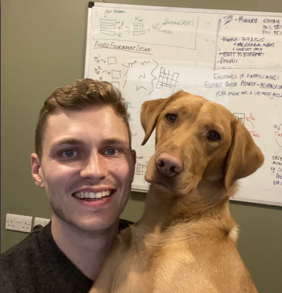
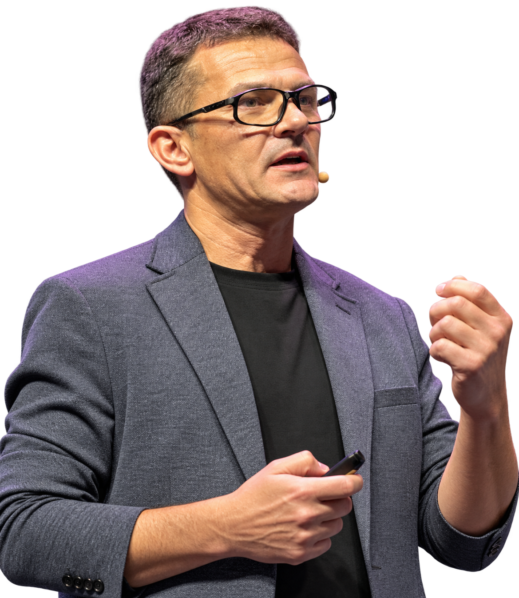

CVPR 2027 workshop · Seattle · June 20 or 21 (date to be confirmed) · full day
Dream, Act, Learn, Repeat
Closing the Loop Between World Models and
Agents for Physical AI
World models now generate the data that trains agents, test and rank those agents, give them foresight before they act, and learn from what the agents experience. The workshop asks whether closing the loop between world models and agents compounds progress or errors, and how much real-world data keeps it grounded.
Why study the loop, not the parts
World models, which predict how the world responds to an agent's actions, can move part of the cost of robot learning from robot-hours to compute. They already generate training data for agents, rank their policies in closed loop, and guide their next action. The natural next step is to close the loop: retrain the world model on what agents experience, so that models and agents improve each other. The first systems that do this report real-world gains, and removing the real data hurts them.
What happens over many iterations is open. A closed loop can compound progress, or let each component inherit the other's errors. Telling the two apart means measuring the loop over iterations, not only the final agent, and asking how much real data keeps it grounded. We study this for both generative world models, learned from video, and digital twins, which simulate a reconstructed scene with a physics engine, because they fail in different ways.
Which links transfer progress, which transfer error, which family closes each link best, and how much real-world signal does each link need to stay honest?
Four links, four questions
Three links run from world models to agents and one runs back. Data changes the agent during training; Foresight queries the model at decision time; Experience is what closes the loop.
Also in scope: action-conditioned video and multimodal world models; latent and JEPA-style world models; digital twins and real-to-sim reconstruction; hybrids of learned models and physics engines; synthetic data for driving and robotics; closed-loop simulation and policy evaluation; planning and RL in imagination; uncertainty, calibration and failure detection; benchmarks and metrics for decision usefulness; safety of world-model-driven systems.
Program
The program follows the loop: two invited talks per link, contributed work in between, and a closing panel that brings the four links together. Times are tentative. Talks and the panel are recorded through the CVPR Zoom room, and remote attendees can send questions online.
- Opening The loop and the four break-point questions
- Data Jack Parker-Holder, Sherry Yang
- Coffee break
- Evaluation Sergey Zakharov, Chiyu Max Jiang
- Contributed talks Four orals, one per link
- Lunch
- Foresight Yilun Du, Heng Ji
- Poster session and coffee Posters grouped by link
- Experience Chelsea Finn, Nicklas Hansen
- Closing panel: Does the loop hold? Invited speakers, moderated by an organizer. Which link is weakest today, should generative models or digital twins close each link, and how much real data does the loop need?
- Best paper award and closing
Invited speakers
Two invited speakers per link of the loop. In the closing panel, each link is discussed from both sides: generative world models and digital twins.
Data

Sherry Yang
NYU
Google DeepMind
Evaluation
Sergey Zakharov
Toyota Research Institute
Chiyu Max Jiang
Waymo

Experience
Chelsea Finn
Stanford University
Physical Intelligence
Nicklas Hansen
NYU
Call for papers
Two tracks
Archival. Full papers up to 8 pages in CVPR 2027 format, published in the CVPR workshop proceedings.
Non-archival. Extended abstracts up to 4 pages. Work under review elsewhere, position papers and negative results are welcome.
Both tracks are reviewed double-blind on OpenReview. All authors need a complete OpenReview profile. Every paper receives written reviews.
What comes out of the day
A loop map
A short, jointly authored paper built from the accepted papers, talks and panel discussion. For each link and each family it states what is known to transfer, what is known to break, and what should be measured. Posted on arXiv and on this site.
Shared metrics
Shared metrics at two levels, reported separately for generative models and twins: per link (agreement between simulated and real policy rankings, false-success rates) and for the whole loop (real-world performance over iterations and its dependence on the share of real data). Published here as a seed for a benchmark.
Open materials
Talks, the panel and posters online after the workshop, plus a community channel connecting this workshop with the NeurIPS 2026 and Robot World Models series.
Organizers
